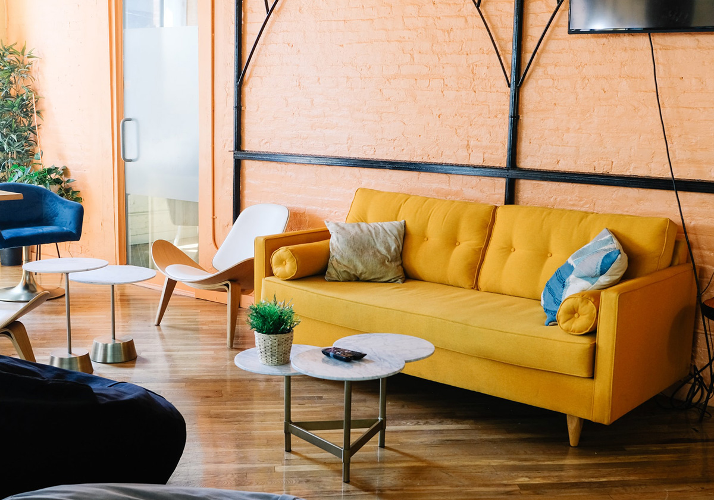
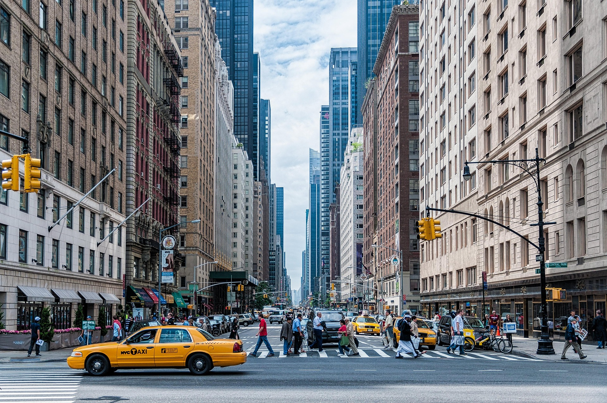

いつまでも 笑っていてほしいから
いつまでも 笑っていてほしいから
あなたの歯の健康をそばで見守る
歯のコンシェルジュ
「歯の健康について、誰に相談したらいいかわからない」「自分に合ったケア方法を知りたい」そんなお悩みはありませんか？ 当院は、あなた専属の「歯のコンシェルジュ」として、不安を解消し、最適な予防プランをご提案します。いつまでも心から笑える毎日を、私たちがそばで見守ります。
患者様のお口の状態、生活習慣、食生活、そして将来の目標を細かくヒアリングし、一人ひとりに最適な予防プランを立案します。経験豊富な歯科衛生士が、専門的なクリーニングに加え、歯磨き指導、食事指導などを通じて、あなた専用のプログラムを丁寧に進めてまいります。
治療内容01
お子様連れの親御様にも安心してご来院いただけるよう、キッズスペースやファミリールームを完備しています。また、すべての方に安全な環境をご提供するため、治療器具はヨーロッパ基準の高度な滅菌システムで徹底管理し、常に清潔な状態を保っています。
設備紹介02

私たちは、あなたの専属「歯のコンシェルジュ」です。一時的な治療で終わらせず、健康な歯を維持するために長期にわたってサポートします。治療計画や予防ケアに関する疑問、費用のご相談など、どんな小さなことでも親身になってお伺いし、二人三脚で生涯の歯の健康を守ります。
サポート内容03
私は、これまでの治療経験の中で、「悪くなってから治す」というサイクルに疑問を感じてきました。当院を開業したのは、治療ではなく、予防を通じて患者様の未来の健康を守りたいという強い思いがあるからです。この地域の皆様が、生涯にわたってご自身の歯で美味しく食事をし、心から笑えるよう、心を込めてサポートさせていただきます。
患者様だけでなく、スタッフ全員が笑顔で働ける環境づくりに力を入れています。経験が浅い方でも、充実した研修制度でしっかりサポート。「予防歯科」のプロフェッショナルを目指し、明るく前向きに成長できる方からのご応募をお待ちしています。
採用情報
| 診療時間 | 月 | 火 | 水 | 木 | 金 | 土 |
|---|---|---|---|---|---|---|
| 09:30-13:00 | ○ | ○ | ○ | ○ | ○ | ○ |
| 15:00-18:30 | ○ | ○ | — | ○ | ○ | — |
※水曜日・土曜日は13:00まで。日曜日・祝日は休診日です。